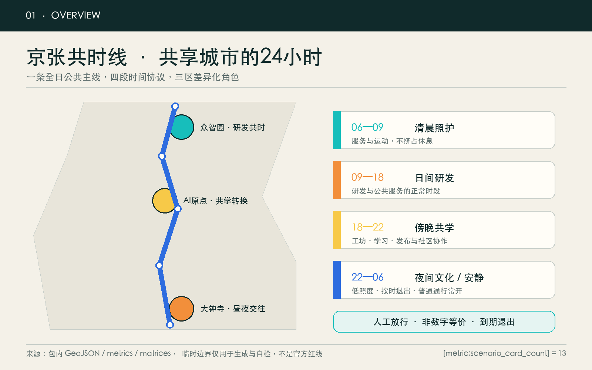
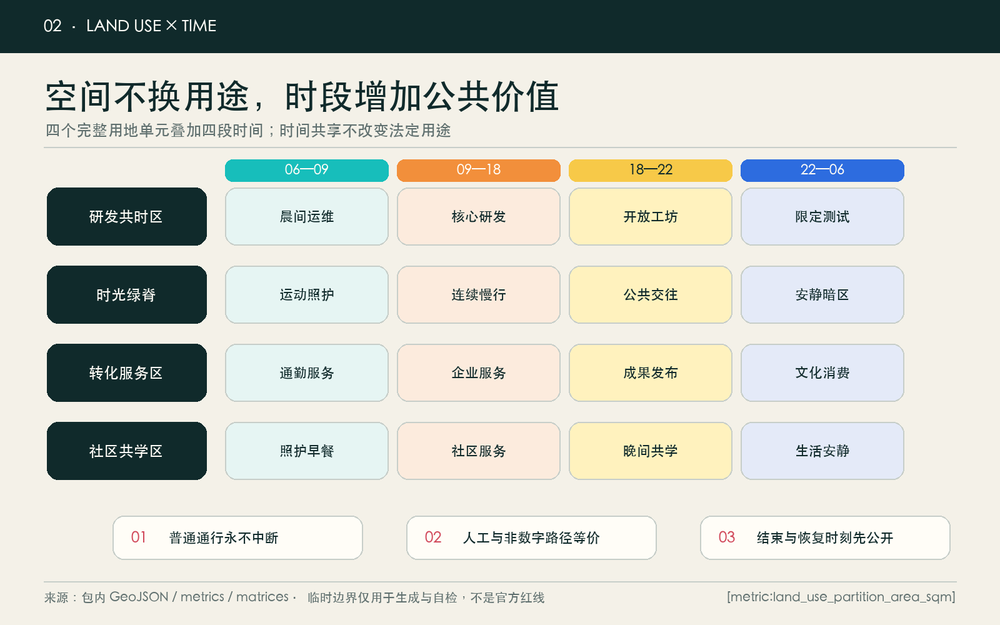
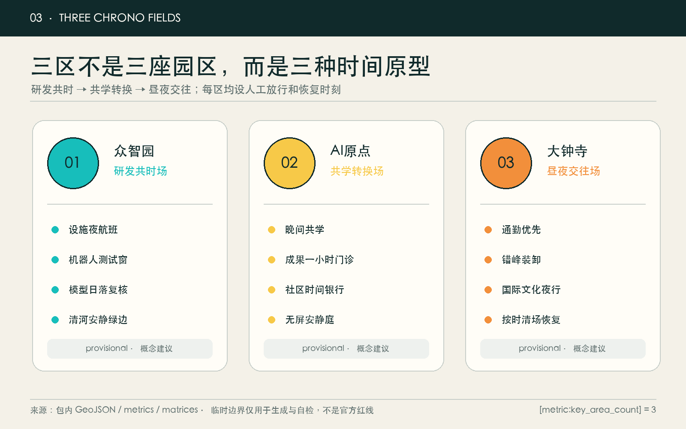
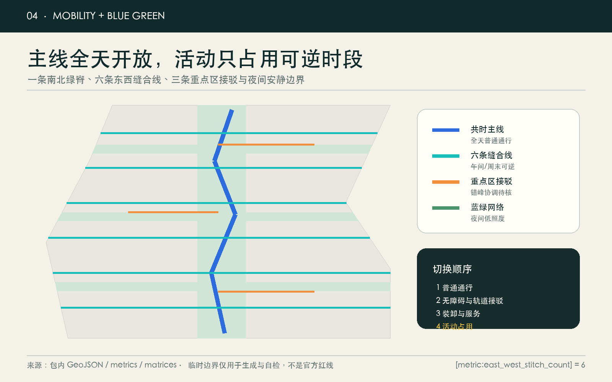
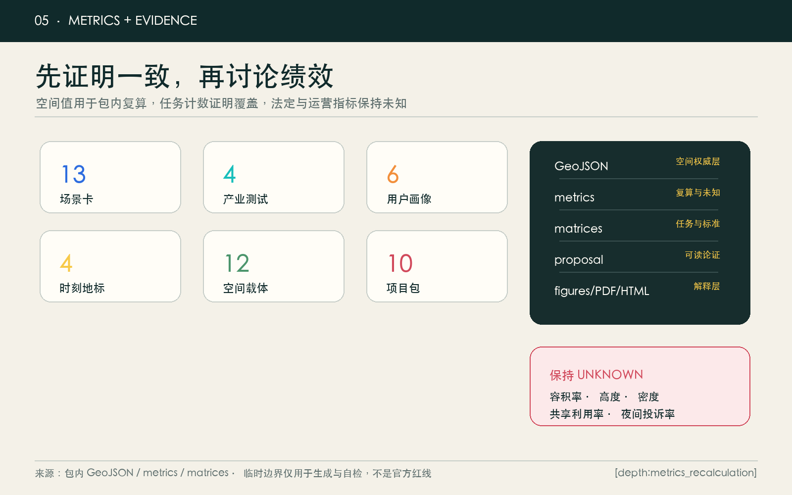

京张共时线 JINGZHANG CHRONO COMMONS：让城市的24小时成为共享基础设施
以时间共享而非增量建设为起点，把京张沿线研发、学习、公共服务、文化与商业空间组织成可预约、可逆、可退出的24小时城市公地；三区分别承担受控研发、校地共学和昼夜交往。
京张共时线：让城市的24小时成为共享基础设施
**JINGZHANG CHRONO COMMONS · Share hours before adding floor area.**
> 百年京张第一次压缩了城市之间的旅行时间；下一次创新，不是让人永远更快，而是让既有城市的每一小时更公平、更有用、更可选择。
设计依据与资料清单
本方案以官方资格预审公告确认的项目名称、三层范围、三处重点区、设计任务和公告面积为第一依据，以清权的智能体任务书确认三大定位、五大功能、三区两翼和六项必答任务。[source:OFFICIAL-ANNOUNCEMENT] [source:AGENT-TASKBOOK] [source:SITE-PACKAGE] [standard:PROJECT-OFFICIAL-ANNOUNCEMENT] [standard:PROJECT-AGENT-OPEN-CALL-TASKBOOK] [standard:MOHURD-URBAN-DESIGN-MEASURES] data/source_registry.json、processed fact pack、规划标准本地快照和缺失数据表共同限定哪些话可以说、哪些只能保持未知。[source:SOURCE-REGISTRY] [source:PROCESSED-FACT-PACK] [depth:existing_conditions_diagnosis]
当前没有可下载、可验证坐标系的官方总体红线和三处重点区 polygon，也缺少控规、道路红线、逐栋现状、权属、文保、市政、消防和公共服务底数。故 geometry/site_boundary.geojson 与 geometry/key_areas.geojson 均沿用仓库临时粗略边界，明确标记 provisional_constraint；它们仅服务生成、可视化和 intake 自检，不是 official redline、审批依据或精确面积依据。[source:BOUNDARY-SOURCE] [source:KEY-AREA-SOURCE] [data:geometry/site_boundary.geojson#SITE-001] [metric:site_area_sqm]
方案的核心判断是：**当精确增量建设条件缺失时，先设计“时间层”，比猜测容积率更诚实，也更可逆。** 京张共时线不创造新的法定用地类别，而是在既有科研、教育、文化、商业、社区服务和公园绿地概念分区上叠加开放时段、安静时段、测试时段、人工值守和退出规则。[standard:MNR-LAND-USE-CLASSIFICATION-GUIDE] [depth:land_use_layout]

三层范围工作框架
三层范围不是同一张图逐级放大，而是“战略时间—空间时序—场所时刻”的递进：
| 层级 | 官方任务尺度 | 共时线回答 | 权威证据 | | --- | ---: | --- | --- | | 统筹研究范围 | 约43.6 km² | 高校、园区、社区和公共设施如何发布可共享时段，形成研发—学习—转化—生活的时间网络 | 公告文字与面积，不新增 polygon | | 总体设计范围 | 约11.4 km² | 一条共时绿脊、六条东西缝合线、十二类空间载体如何在24小时内轮换而不阻断普通通行 | [data:geometry/land_use.geojson#LU-001] [data:geometry/roads.geojson#ROAD-001] | | 三处重点区 | 合计约368.4 ha | 众智园、AI原点、大钟寺分别验证研发共时、共学转换和昼夜交往 | [data:geometry/key_areas.geojson#PROV-KEY-001] [metric:key_area_count] |
总体结构为“**一线、四时、三区、六缝、十二载体、十三场景**”。一线是京张共时绿脊；四时是清晨照护、日间研发、傍晚共学、夜间文化/安静；三区是三处重点区；六缝恢复东西向日常联系；十二载体承接可逆运营；十三场景把时间协议变成人可使用的服务。[depth:three_level_scope_framework] [depth:overall_spatial_structure] [metric:chrono_carrier_count] [metric:scenario_card_count]
任何活动都服从三条底线：普通通行不因活动中断；没有智能设备也能获得等价服务；结束时刻、责任人和恢复方式在开始前公开。official polygons 到位后，必须同步重切用地、道路、绿地、公共空间、建筑原型和分期，并重算全部 metrics，而不是只替换边界文件。[assumption:A-BOUNDARY-001]

统筹研究范围产业与未来城市研究
命名、Logo 与三区两翼
主名称“**京张共时线**”强调不同人、行业和场所在同一条公共时间轴上协同，而不是“全天营业”。英文名 **JINGZHANG CHRONO COMMONS** 指向可共同制定规则、共同预约和共同复盘的时间公地。Logo 方向是一枚开放表盘：两条平行轨道构成指针，中央缺口表示始终保留人工判断；晨青、日橙、暮黄、夜蓝四种状态色只用于时段信息，不使用企业商标、人物、铁路既有标志或未授权字体。[source:AGENT-TASKBOOK]
三大定位被翻译为三种时间价值：百年京张文化带保存“历史时间”；都市AI生活体验带改善“日常时间”；AI融合创新带压缩“从研究到首用的等待时间”。五大功能对应自主研发的验证时窗、世界级生态的共享时窗、AI+场景的服务时窗、活力城市的公共时窗和AI治理的申诉/退役时窗。众智园—AI原点—大钟寺形成“验证—共学—首用—反馈”的南北回路；中关村科技服务翼提供法务、标准、人才与转化服务，小月河场景赋能翼承接生态、社区与公共服务反馈。所有关系均是概念建议，不代表政府机构、投资或招商承诺。
七个国际机制案例
| 案例 | 可转化机制 | 京张转译 | 限制 | | --- | --- | --- | --- | | Smart Kalasatama | 以“每天多一小时”和居民共创衡量智慧城市 | 不以屏幕数量，而以可自主支配时间和服务等价评估 | [source:CASE-KALASATAMA] 仅作背景 | | Helsinki Varaamo | 公共空间按时预约 | 发布空间可用时段、责任和无障碍条件 | [source:CASE-HELSINKI-VARAAMO] 页面需后续复核 | | Seoul Public Service Reservation | 场地、活动、课程、服务统一检索 | 统一发现，但保留现场/电话人工渠道 | [source:CASE-SEOUL-RESERVATION] 不移植实名机制 | | Punggol Digital District | 设施、能源、交通和数字孪生协同 | 先模拟时段冲突，再小范围运行 | [source:CASE-PUNGGOL] 不证明北京可行性 | | Barcelona Innova Lab | 公开问题、限期试验、复核 | 每个时段试点有日落日期和扩大条件 | [source:CASE-BCN-INNOVA] 不代表本地获批 | | Milan Piazze Aperte | 可逆公共空间先试后评 | 午间、周末的轻量时段转换 | [source:CASE-MILAN-PIAZZE] 机制待深化核验 | | EU Testing Facilities | 虚拟—受控—真实环境逐级验证 | 众智园四类产业测试先过安全门 | [source:CASE-EU-TEF] 不构成认证 |
这些案例只提供机制参照，不推导北京的法定控制、居民需求或绩效事实。方案的产业生态把“可用空间时段、算力时段、导师时段、测试时段、法务时段和公共反馈时段”作为共享接口：土地和建筑仍由法定规划、权属和专业条件控制；AI 只辅助冲突检测、候选排程和异常提醒，最终放行由空间责任人完成。[depth:development_intensity_controls]
总体设计范围城市更新与控规深度城市设计
总体空间由四个完整覆盖且无缝的概念用地单元组成：[data:geometry/land_use.geojson#LU-001] 研发共时区、[data:geometry/land_use.geojson#LU-002] 时光绿脊、[data:geometry/land_use.geojson#LU-003] 转化与昼夜服务区、[data:geometry/land_use.geojson#LU-004] 社区共学与生活区。每个单元保留合法 land_use_code，时间程序只是运营叠加，不改变用途、权属或审批条件。[metric:land_use_partition_area_sqm]
“十二载体”不是十二栋拟建建筑，而是可供专业团队在现状调查后匹配的空间原型：共时调度厅、夜间开放实验室、开发者晚自习、社区时间银行、成果换乘厅、共享算力驿站、无屏安静客厅、错峰物流合流点、共时市集、国际共时客厅、城市时刻档案馆和运维夜校。[data:geometry/buildings.geojson#BLDG-001] [metric:building_prototype_count] 对应建筑仅表达功能基底，逐栋保留、改造、拆除或新建必须等待清权现状、权属和控规资料。[assumption:A-BUILDING-001] [depth:retain_renovate_demolish]
城市界面按“可切换、可识别、可恢复”设计：固定构筑物最少；地面状态线、可移动家具、储物和电源接口服务多时段；普通导视永久有效；夜间低照度、安静边界和清场责任优先。任何 24 小时服务都不得被写成所有场所全天开放；每处载体必须公布开放/安静/维护时段和冲突处理人。[depth:height_massing_character] [standard:MOHURD-CONTROL-DETAILED-PLANNING] [standard:MOHURD-ARCH-DESIGN-DEPTH-2016]
重点区域详细设计
三处重点区均以“定位—空间结构—建筑更新—交通慢行—公共空间—AI场景—实施风险”组织可读小方案，并由 [depth:three_key_area_detailed_design] 连接正文、图层和图纸；临时范围不支撑地块级结论。

众智园·研发共时场
众智园承担“从空闲设施到受控验证”的北部原型。空间结构是安静绿边—共享研发庭—限定测试环—人工值守厅。日间优先正常研发，傍晚开放导师与设备预约，夜间只允许已通过风险分级的受控测试；模型、机器人、端侧设备和算力调度分别设置测试窗、物理边界、现场责任人、急停、数据最小化和到期退出。[data:geometry/key_areas.geojson#PROV-KEY-001] [data:geometry/constraints.geojson#SCN-01]
建筑动作只建议“保留优先—微改接口—可逆内装—不确定则留白”；交通侧先调查北五环、清河和园区出入口，再讨论接驳和装卸时段。公共空间通过低照度绿廊隔离夜间测试与居民休息。风险是设备安全、噪声、能耗和测试外溢，未取得专业评估与许可不得进入真实公共环境。[assumption:A-SAFETY-001]
AI原点·共学转换场
AI原点把高校、园区和社区不同时段的空间余量组织成“共学转换场”：日间成果服务，傍晚开放工坊，晚间社区共学，安静时段恢复普通生活。空间结构是成果换乘厅—开放首层—一小时成果门诊—社区时间银行—无屏安静庭。[data:geometry/key_areas.geojson#PROV-KEY-002] [data:geometry/constraints.geojson#SCN-05]
AI 可辅助匹配问题、导师和场地，但不建立个人信用分或学习轨迹；线下报名、现场导师和人工申诉与数字入口等价。拆改留需在逐栋调查后确定，当前仅提出首层可逆开放、共享储物、声环境分区和晚间安全照明等方向。风险是校园/园区边界、权属、噪声和隐私，任何开放均需空间管理者和使用者共同协议。
大钟寺·昼夜交往场
大钟寺承担通勤、商务、文化与夜间生活的时间换乘。早高峰保障清晰换乘；午间共享路缘和小型活动；傍晚首发、路演和文化夜行；深夜恢复低照度安静通行。空间结构是站点四象限步行方向—共时市集—国际客厅—百年时刻厅—无屏安静庭。[data:geometry/key_areas.geojson#PROV-KEY-003] [data:geometry/public_space.geojson#PUBLIC-005]
路缘、停车和装卸只提出错峰原则，具体断面、信号、消防和工程线位待核。智能体、终端和内容消费体验必须主动选择，不采用默认人脸、连续轨迹或强制账户。风险是夜间扰民、交通冲突和商业排斥；安静时段和普通通行优先于活动收益。[assumption:A-NIGHT-001]
AI 创新生态、人才画像与 AI+ 场景
六类需求画像只用于空间需求，不描绘或追踪真实个人：[metric:persona_count]
| 画像 | 时间痛点 | 空间响应 | 不可逾越边界 | | --- | --- | --- | --- | | 研发工程师 | 设备与导师时段难匹配 | 研发设施夜航班、受控测试窗 | 安全员和设备责任人放行 | | 初创团队 | 首个客户、法务和测试等待长 | 一小时成果门诊、错峰测试 | 不承诺融资、订单或政策 | | 高校师生 | 课堂、科研与转化时间割裂 | 晚间共学、成果换乘厅 | 不采集学习轨迹与未公开成果 | | 周边居民 | 活动挤占休息和普通服务 | 安静时段、线下预约、申诉台 | 休息权和非数字等价路径优先 | | 一线运维人员 | 夜间责任重、系统故障难接管 | 运维夜校、人工急停、清场表 | AI 不替代安全责任人 | | 国际访客 | 时区、语言和普通支付障碍 | 多语文化夜行、人工导览 | 不强制账户、生物识别或推荐 |
十三张场景卡中 SCN-01—04 是产业测试验证场景；所有卡都进入 geometry/constraints.geojson，采用“开始前说明—运行中可见—结束后恢复”的同一协议。[metric:scenario_card_count] [metric:industry_test_scenario_count]
| ID | 场景卡 / 位置 | 服务与时间 | 数据、人工与退出 | | --- | --- | --- | --- | | SCN-01 | 研发设施夜航班 / 众智园 | 空闲实验设施预约 | 安全员现场放行；设备日志限期；到点关闭 | | SCN-02 | 机器人错峰测试窗 / 众智园 | 低人流时段受控验证 | 物理围合、低速、急停、公众绕行 | | SCN-03 | 端侧算力潮汐调度 / 北段 | 共享已授权余量 | 负荷与能耗可见；不得读取业务内容 | | SCN-04 | 模型日落复核夜 / 众智园 | 到期模型集中复核 | 人工决定续用、降级或退役 | | SCN-05 | 校地晚间共学 / AI原点 | 傍晚开放工坊 | 线下报名；不建学习画像；导师值守 | | SCN-06 | 一小时成果门诊 / AI原点 | 法务、无障碍与合规咨询 | 人工坐席；不承诺转化结果 | | SCN-07 | 社区时间银行 / 中段 | 自愿互助换时 | 只记互助时长，不做信用评分 | | SCN-08 | 错峰装卸合流点 / 南段 | 商户协商配送窗 | 不推断消费；交通方案另审 | | SCN-09 | 昼夜路缘切换 / 大钟寺 | 通勤、装卸、活动分时 | 实体标识优先；人工交通管理 | | SCN-10 | 多语文化夜行 / 京张绿脊 | 夜间文化导览 | 离线包/人工讲解；史实人工核校 | | SCN-11 | 无屏安静时段 / 全带 | 关闭推荐与识别 | 不扫码仍可通行和使用基本服务 | | SCN-12 | 共时活动周 / 全带 | 年度机制概念 | 活动许可、安全、版权逐项审批 | | SCN-13 | 城市时刻申诉台 / 公共节点 | 处理冲突、噪声、排斥和误判 | 人工受理、公开结论、可暂停试点 |
AI 的角色限于候选排程、冲突预警、无障碍提示和聚合统计；空间责任人负责放行，使用者可拒绝，专业人员负责安全与规划判断。任何场景不得因为“效率”取消人工柜台、普通支付、纸面告知或无屏路径。[assumption:A-ACCESS-001]
用地、建筑规模与拆改留方案
用地分区完整覆盖当前提交边界且互不叠压，[metric:land_use_partition_area_sqm] 与 [metric:site_area_sqm] 可复核拓扑；分区代码来自公开分类子集，不创造“AI 用地”。绿地、公共空间和道路是叠加设计图层，不替代法定图则。[standard:MNR-LAND-USE-CLASSIFICATION-GUIDE]
十二个建筑基底的合计概念面积为 [metric:building_footprint_area_sqm]，只验证空间载体表达非空，不能当作现状或批准建筑规模。正式深化按五步工作：取得清权逐栋底数；核对权属、消防、结构、文保和控规；先识别可共享时段；比较保持、微改、可逆内装、功能置换与留白；最后才讨论新建。容积率、建筑高度和密度在 metrics.json 保持 unknown。[metric:floor_area_ratio] [metric:building_height_m] [metric:building_density]
风貌以轨道灰、晨青、日橙、暮黄、夜蓝构成状态系统；颜色只说明“何时、谁负责、能否进入”，不制造赛博景观。固定界面保持克制，时间信息使用可更换标牌、地面线和低亮度状态灯；文保范围和视觉廊道未核验前，不新增高耸地标或大型屏幕。[depth:height_massing_character]
交通、轨道、市政与公共服务设施
交通结构由一条南北共时主线、六条东西缝合线和三条重点区接驳支线构成，[metric:concept_walk_network_length_m] 只表达概念连通，不是道路中心线、红线或工程方案。[data:geometry/roads.geojson#ROAD-001] [metric:east_west_stitch_count] 设计优先级是普通步行/骑行连续、无障碍等价、轨道公交接驳、非机动车停放、错峰装卸，最后才是活动占用。任何时段切换不得封死救援、消防、居民出入或无障碍路径。[depth:traffic_rail_slow_parking]

市政策略是“先测余量，后排时段”：公开允许披露的能源、设备和空间负荷；AI 只给出候选错峰；设施负责人确认容量和安全；异常时立即回到普通运行。端侧算力驿站只共享授权容量，不接触业务内容；夜间照明、噪声、排水、消防和充电负荷都需专业校核。[depth:municipal_new_infrastructure] [assumption:A-CONTROLS-001]
公共服务采用四入口：线上预约、电话、现场人工、无需预约的基本服务。统一检索可以减少找服务时间，但不得把账户、智能手机或生物识别变成进入公共空间的前提。未来 shared_space_utilization_rate 和 quiet_hour_complaint_rate 仅在匿名聚合、公开口径和公众同意后统计，当前保持 unknown。[metric:shared_space_utilization_rate] [metric:quiet_hour_complaint_rate]
蓝绿空间、公共空间与城市风貌
时光绿脊与三条降温指廊形成全天候公共骨架：[data:geometry/green_space.geojson#GREEN-001]。概念绿地面积与比例为 [metric:green_space_area_sqm]、[metric:green_ratio]，公共空间面积与比例为 [metric:public_space_area_sqm]、[metric:public_space_ratio]；这些值从 provisional geometry 派生，不是法定绿地率或现状调查结论。[depth:blue_green_public_space]
同一空间随时间切换但保持生态底线：清晨运动不扰动生境；午间遮阴和休憩优先；傍晚交流采用可移动设施；夜间保留暗区、安静通行和关闭时刻。清河、小月河、京张遗址公园、文保和排水条件均需官方资料和专业复核后才能形成工程设计。
四处 AI 朝圣/荣誉节点均为概念性公共空间组件，而非大型地标建筑：[metric:landmark_count]
1. **百年时刻厅**：把京张列车时刻、城市生活时间和AI版本时间并置，史实待专业核校。[data:geometry/public_space.geojson#PUBLIC-001] 2. **共时调度台**：公开显示空间可用时段、责任人、普通路径和恢复时刻。[data:geometry/public_space.geojson#PUBLIC-002] 3. **原点贡献钟**：记录开源贡献、失败、拒绝提交、人工修正与退役，不按商业估值排榜。[data:geometry/public_space.geojson#PUBLIC-003] 4. **一小时礼物站**：只展示经公开方法验证、真正由居民自主支配的时间收益；无法证明则留空。[data:geometry/public_space.geojson#PUBLIC-004]
文化叙事从“铁路让人准时抵达”转向“AI 让城市尊重不同人的时间”。导视把时刻表的清晰、工程文化的诚实和中关村的开放迭代结合；Logo 与文化标识分开，前者识别共时网络，后者解释历史。所有字体、图像、人物和企业标识需清权；本成果只使用自绘图形和系统可用字体。[source:AGENT-TASKBOOK]
更新项目清单、实施政策与分期计划
| 编号 | 概念项目包 | 首要交付 | 进入下一步的证据门槛 | | --- | --- | --- | --- | | CT-01 | 全带时间普查 | 可共享/安静/维护/封闭时段清单 | 管理者与使用者共同确认，不发布敏感运营数据 | | CT-02 | 普通路径保障 | 现场、电话、纸面和无屏等价入口 | 与数字路径时间、价格、无障碍条件等价 | | CT-03 | 众智园四类受控测试窗 | 安全规则、责任人、急停和日落日期 | 专业安全评估与许可通过 | | CT-04 | AI原点晚间共学 | 开放工坊、导师值守、安静边界 | 校地权属、消防和社区协议确认 | | CT-05 | 大钟寺昼夜路缘试点 | 通勤、装卸、活动和恢复时刻表 | 交通、消防、居民与商户复核 | | CT-06 | 六条东西缝合线 | 连续步行、骑行与无障碍指引 | 道路红线、断面和现场走查完成 | | CT-07 | 四处时刻地标 | 小尺度自绘导视与贡献记录 | 文保、景观、版权与维护责任确认 | | CT-08 | 共时调度与申诉台 | 公开时段、人工柜台、暂停权限 | 隐私影响评估和服务等价审计 | | CT-09 | 年度“24小时共时节” | 白天研发、傍晚共学、夜间文化、安静收束 | 活动许可、安全、版权逐项审批 | | CT-10 | 共时方法开源包 | 时间普查表、场景卡、退出模板和复盘报告 | 去标识化、许可证和专业复核完成 |
近期 [data:geometry/phasing.geojson#PHASE-001] 只做时间普查、普通路径和可撤回试点，对应 [metric:phase_1_area_sqm]；中期 [data:geometry/phasing.geojson#PHASE-002] 在证据门槛通过后连接三区网络，对应 [metric:phase_2_area_sqm]；远期 [data:geometry/phasing.geojson#PHASE-003] 才形成年度协议、国际交流和方法输出，对应 [metric:phase_3_area_sqm]。三期是学习顺序，不是政府开发时序或资金承诺。[metric:phase_count] [depth:phasing_implementation]
运营概念采用“空间责任人—时段主持人—专业安全人—公众观察员—独立复盘者”五方结构。每个项目必须发布问题、时段、空间、数据、人工入口、停止条件、投诉渠道、结果和退役日期。年度活动以共时节、城市问题夜校、模型日落复核夜、无屏安静日和国际时区接力构成；开发者从公开问题进入受控测试，再到小范围首用和复盘，不以招商数量替代公共价值。[assumption:A-GOV-001] [depth:renewal_project_list]
指标体系、面积复算与合规矩阵

空间指标均由 EPSG:4548 投影下的当前 GeoJSON 复算：总体边界 [metric:site_area_sqm]、完整用地分区 [metric:land_use_partition_area_sqm] 与图斑数 [metric:land_use_feature_count]、绿地 [metric:green_ratio]、公共空间 [metric:public_space_ratio]、概念慢行网络 [metric:concept_walk_network_length_m]、建筑原型 [metric:building_prototype_count] 和三处分区 [metric:key_area_count]。方案计数来自结构化成果：十三场景、四项产业测试、六类画像、四处地标、十个项目包和三期。[metric:scenario_card_count] [metric:industry_test_scenario_count] [metric:renewal_project_count]
这些数字分为三类：provisional 空间计算值只验证内部一致性；方案计数值证明任务覆盖；法定和运营值保持 unknown。容积率、高度、密度、共享利用率和安静时段投诉率不得用愿景数字补齐。[depth:metrics_recalculation] compliance_matrix.json 覆盖公告 1.3、1.4、1.5 和 agent.1—agent.6；standard_matrix.json 连接本地专业标准；design_depth_matrix.json 将现状诊断、三层范围、用地、建筑、交通、市政、蓝绿、三区、项目、分期、指标和风险逐项定位到正文、图层、图纸和自检。
风险、版权与合规说明
首要风险是把临时 polygon、时间叠加或建筑原型误读为正式规划，故所有图面、正文、sources、assumptions 和 self-check 同时降级标注。第二是夜间开放侵害休息权，故安静时段和关闭时刻先于活动。第三是数字排斥，故非数字等价入口常开。第四是测试外溢，故虚拟—受控—真实逐级放行、人工急停和到期退役。第五是调度优化固化既有不平等，故冲突决策可申诉、结果公开且可暂停。第六是运维成本被忽略，故时段主持、清场、储物、保洁、安全和恢复责任必须在开放前落实。[depth:risk_missing_data]
本方案不声称官方批准、审定控规、最终权属、建设规模、工程可行性、投资、招商或活动安排。所有空间落地内容均为**概念建议、参考方案或可供专业团队深化研究**。图件、HTML 和 PDF 由本次 agent 使用包内 GeoJSON、metrics、矩阵和自绘矢量/位图生成，不含外部地图瓦片、新闻图片、人物肖像、商标、远程脚本、字体或跟踪代码。版权说明见 report/copyright_statement.md。
参考资料
- [source:OFFICIAL-ANNOUNCEMENT] 官方征集公告
- [source:AGENT-TASKBOOK] 面向智能体任务书摘录
- [source:SOURCE-REGISTRY] 公开资料登记表
- [source:BOUNDARY-SOURCE] 临时粗略边界及其使用限制
- [source:CASE-KALASATAMA]、[source:CASE-SEOUL-RESERVATION]、[source:CASE-PUNGGOL]、[source:CASE-BCN-INNOVA]、[source:CASE-MILAN-PIAZZE]、[source:CASE-HELSINKI-VARAAMO]、[source:CASE-EU-TEF] 仅作机制背景